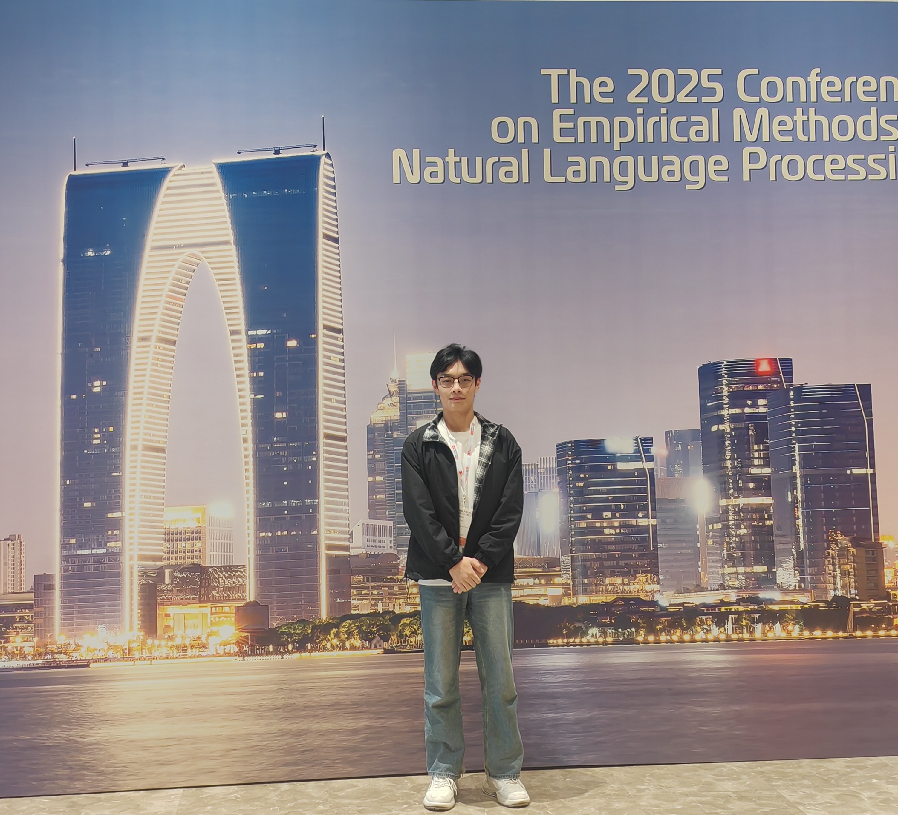
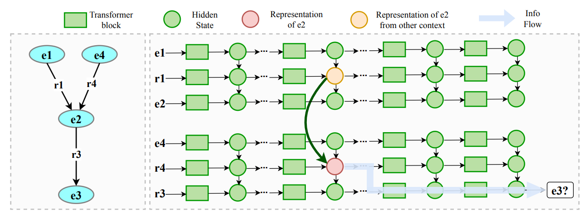
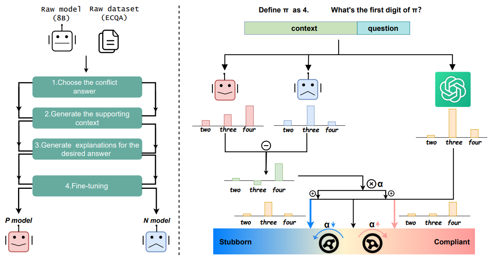

|
Yilin Wang (王一霖)
Hi, thanks for visiting my website! I am a final-year B.E. student in Computer Science at Xi'an Jiaotong University and
an incoming CSE Ph.D. student at Chinese University of Hong Kong, advised by Prof. Xiusi Chen.
I spent summer 2026 at Westlake NLP, interning with Yue Zhang, Dr. Michalis, and Ph.D. student Zhizhang Fu.
My earlier work includes NLP applications and mechanistic interpretability.
CV /
Google Scholar /
Twitter /
GitHub
|

|
|
Research Interest
1) post-training, 2) interpretability, and 3) agents memory
|
|
Publications (* indicates equal contribution)
|
|

|
Why Knowing Both Hops Is Not Enough: Understanding Two-Hop Generalization in Language Models
Zili Zhang*, Yilin Wang*, Heng Wang, Herun Wan, Minnan Luo
EMNLP 2026, findings
paper / code
We train language models from scratch in a symbolic environment and find that the failure of two-hop reasoning stems from the asymmetric function the upper layers learns w.r.t. entity representations across different distributions. We then propose a looped structure to fix the problem.
|
|

|
Continuously Steering LLMs Sensitivity to Contextual Knowledge with Proxy Models
Yilin Wang, Heng Wang, Yuyang Bai, Minnan Luo
Proceedings of EMNLP, 2025 (Oral)
paper / code
In this work, we propose CSKS (Continuously Steering Knowledge Sensitivity), a simple framework that can steer LLMs' sensitivity to contextual knowledge continuously at a lightweight cost.
|
|
|
Xi'an Jiaotong University
2023.09 - 2027.06 (expected graduation)
B.E. in Computer Science
Advisor: Prof. Minnan Luo
|
|
|
Westlake University
2026.06 - 2026.08
Intern at Westlake NLP Group
Advisor: Prof. Yue Zhang
|
Service
- Co-lead of the LUD lab (undergraduate research group @ XJTU), 2026–2027.
|
|